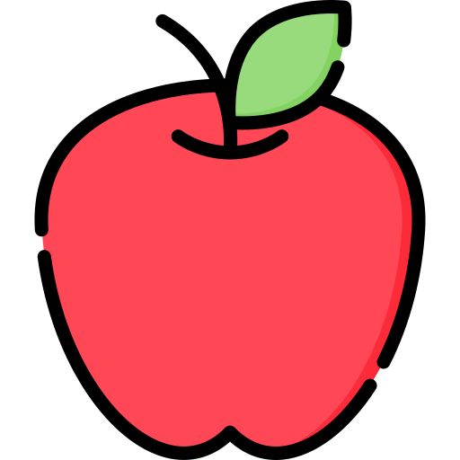

Have a Good Day!
Favourites
Music
- Bad Things by Camilla Cabello
- L.O.V.E by Frank Sinatra
- D (half moon) by Dean
- Biarlah bulan berbicara by Broery marantika
- Goo Kan by Bright Vachirawit
Movies
- The Chronicles of Narnia
- Midnight Sun
- Miracle in cell no. 7
- Love Rosie
- Divergent
Dramas
- Boys over Flower
- Heartstrings
- Scarlet Heart Ryeo
- Tempted
- Ugly Duckling
Foods
- Padthai
- Sticky rice with mango
- Fried rice
- Yogurt
- Bakso
Places
- Japan
- Australia
- Netherlands
- Turkey
- Finland
Others
- Oil painting
- Glass arts
- Miniature arts
- Literatures
- Fashions
Anime